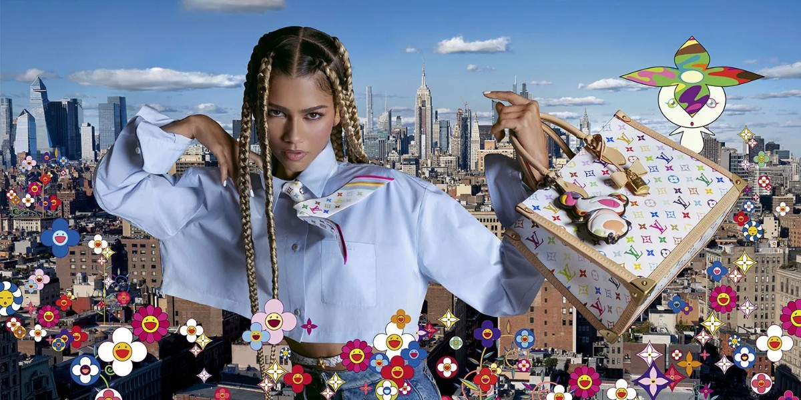
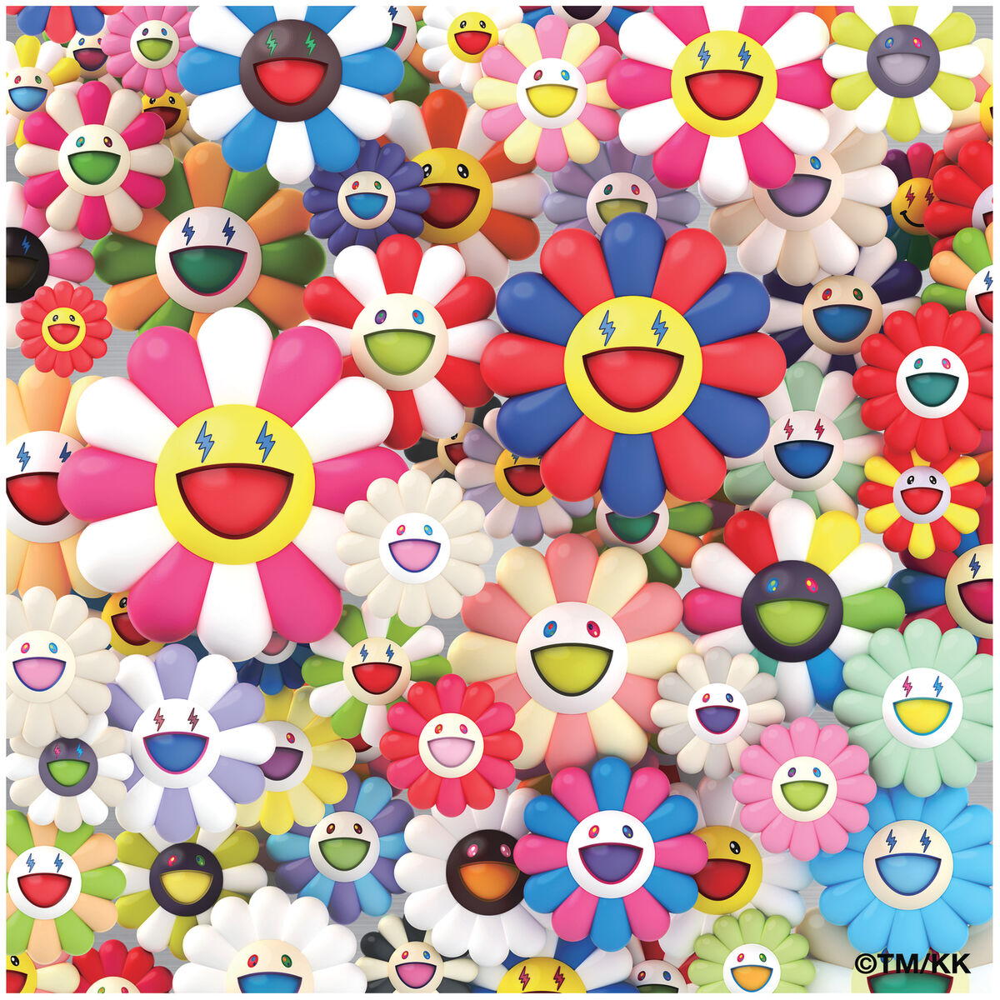

La colección incluye reinterpretaciones de bolsos icónicos como el Speedy 25, el Keepall, el Alma BB y el OnTheGo, adornados con el distintivo Monogram Multicolore de Murakami en fondos blancos y negros. Además, se presentan accesorios como la Vanity Pouch y el Nano Speedy, así como cinturones, gafas de sol y pañuelos de seda que reflejan la esencia de la colaboración original.
Los personajes emblemáticos de Murakami, como el Superflat Panda y las flores sonrientes del Superflat Garden, también están presentes en esta colección, aportando un toque lúdico y colorido a las piezas. La campaña publicitaria cuenta con la actriz y embajadora de la marca, Zendaya, quien personifica el espíritu vibrante de esta reedición en una serie de imágenes caleidoscópicas.

Takashi Murakami es un artista japonés conocido por fusionar el arte tradicional japonés con la cultura pop contemporánea, el manga y el anime. Nació el 1 de febrero de 1962 en Tokio y ha sido una figura clave en el arte contemporáneo, desarrollando un estilo propio llamado “Superflat”, que combina elementos de la pintura tradicional japonesa con la estética bidimensional del anime y la publicidad.
Superflat: Murakami acuñó este término para describir tanto la estética visual de su arte como la superficialidad de la cultura contemporánea japonesa. En sus obras, usa colores llamativos, figuras planas y una iconografía influenciada por el manga, el anime y la cultura otaku.
Sigue siendo una figura influyente en el mundo del arte y la moda, con exposiciones en museos como el MoMA en Nueva York y el Palacio de Versalles en Francia. Su capacidad para mezclar arte de alta cultura con productos comerciales ha redefinido la relación entre el arte contemporáneo y la industria del lujo.

En 2020, el reconocido artista japonés Takashi Murakami colaboró con el cantante colombiano J Balvin en el arte del álbum “Colores”.
Back
Next